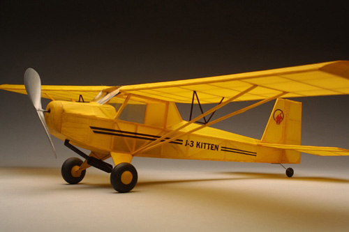
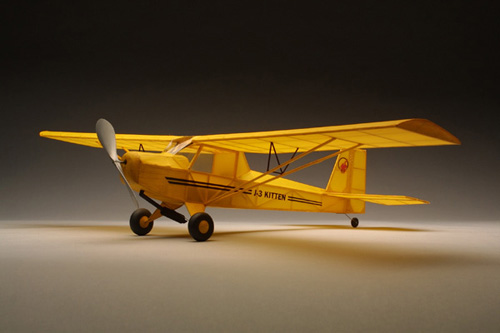
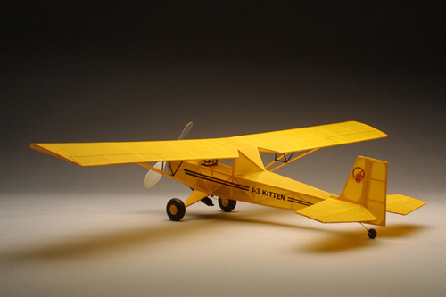
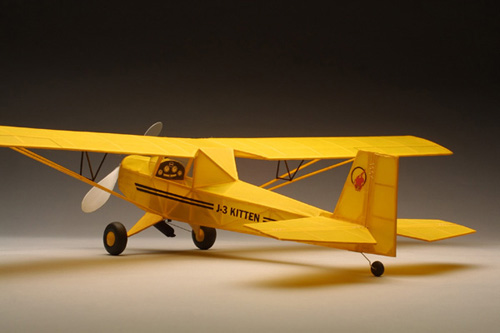
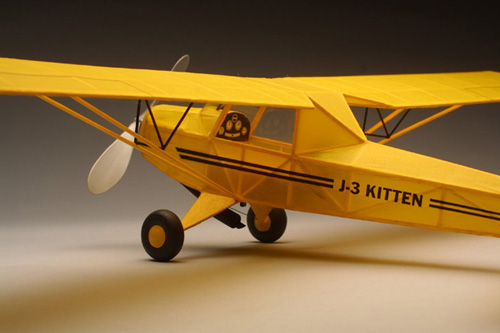
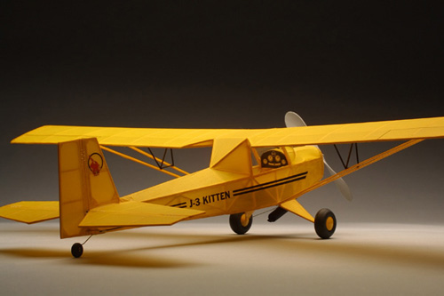
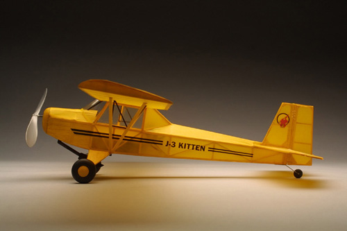
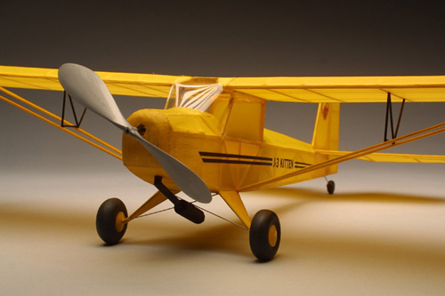

18040 - The J-3 Kitten is just unique enough to stand out from the crowd.

18036 - The J-3 Kitten is just unique enough to stand out from the crowd.

18050 - The J-3 Kitten is just unique enough to stand out from the crowd.

18041 - Even a simple paper panel invites the modeler to "climb aboard" for a quick flight. The fuselage decals were laser printed onto clear label stock.

18042 - Even a simple paper panel invites the modeler to "climb aboard" for a quick flight. The fuselage decals were laser printed onto clear label stock.

18043 - Even a simple paper panel invites the modeler to "climb aboard" for a quick flight. The fuselage decals were laser printed onto clear label stock.

18048 - The simple lines of the Kitten are easily seen in this side view.

18057 - The exhaust pipe and muffler were carved from light balsa and add a lot of personality to the Kitten.
|